Arus kas
Pemasukan dan pengeluaran dalam periode terpilih
● Pemasukan● Pengeluaran

Data tersimpan di browser ini.
Unduh cadangan secara berkala.
Pantau perjalanan uang usaha Anda dalam satu tempat.
Setiap perjalanan punya cerita. Setiap rupiah punya catatan.
Pemasukan dan pengeluaran dalam periode terpilih
Kenali biaya operasional Anda
Semua catatan pemasukan dan pengeluaran usaha
| TANGGAL | TRANSAKSI | USAHA / KENDARAAN | METODE | JUMLAH | AKSI |
|---|
Catat pendapatan perjalanan atau biaya operasional pertama Anda.
Ringkasan kas operasional per kendaraan, sesuai filter periode.
Periode mengikuti filter di atas. Ekspor untuk pembukuan Anda.
Laba kas = pemasukan operasional − pengeluaran operasional. Modal dan prive hanya memengaruhi saldo kas. Laporan berbasis kas ini belum mencakup piutang, utang, penyusutan, atau pajak.